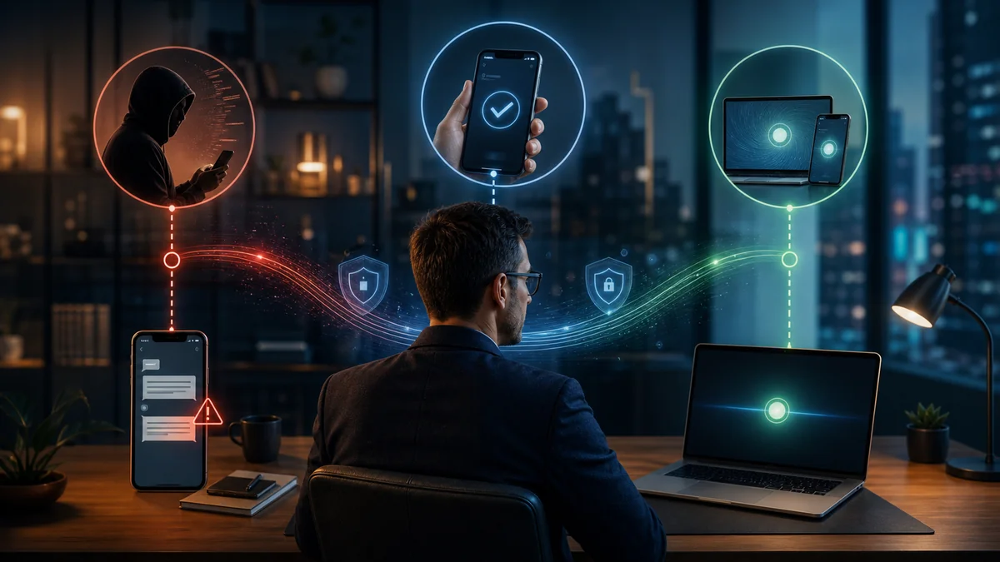
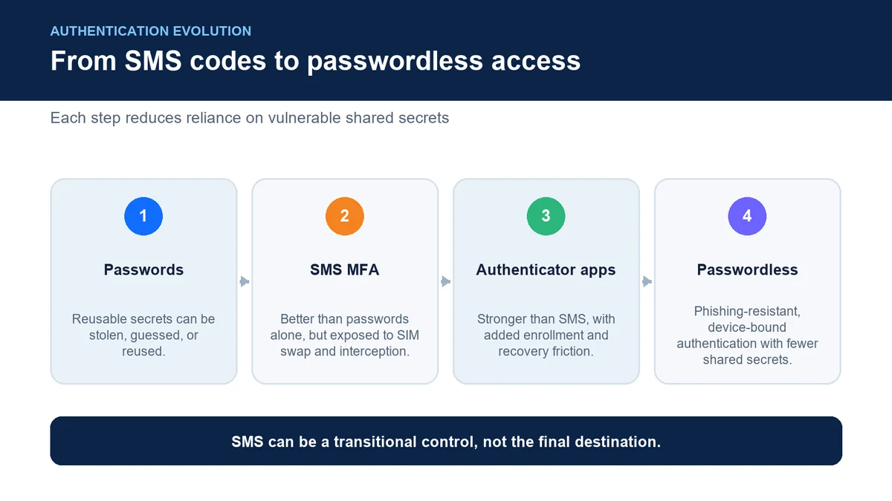
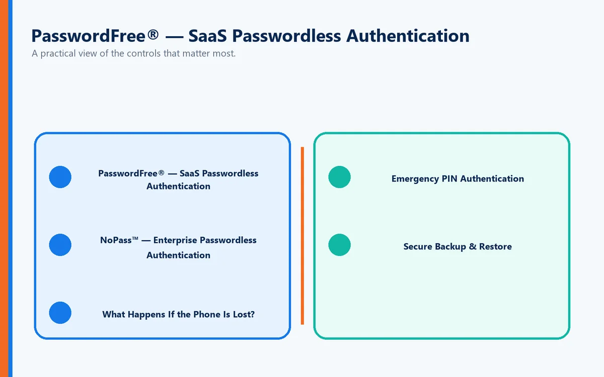

As organizations continue strengthening cybersecurity, many users encounter the same question:
"Do I really need an authenticator app, or can I just receive a text message instead?"
The short answer is:
Yes, SMS-based Multi-Factor Authentication (MFA) can be used in many situations—but it is not considered the strongest authentication method available today.
Text messages are better than relying on passwords alone. However, security experts, including the National Institute of Standards and Technology (NIST), have warned that SMS-based authentication has weaknesses and should not be considered a preferred solution for protecting high-value accounts or sensitive systems.
The evolution of authentication is moving away from:
Passwords → SMS Codes → Authenticator Apps → Passwordless Authentication
The future of identity security is not about adding more steps.
It's about creating authentication that is stronger, simpler, and more resilient.
What Is Full Duplex Authentication® (FDA)?
Full Duplex Authentication® (FDA) is the patented authentication technology powering PasswordFree®, Identité's Software-as-a-Service (SaaS) authentication platform, and NoPass™, its enterprise Platform-as-a-Service (PaaS) solution. Rather than relying on passwords, SMS codes, or one-time authentication challenges, FDA securely validates both the user and the trusted device through a unified, passwordless authentication process.
Authentication powered by FDA is designed for both cybersecurity and business continuity. In addition to passwordless authentication, organizations can enable Emergency PIN Authentication and Secure Backup & Restore, allowing users to recover access quickly when devices are lost, replaced, or unavailable.
What Is SMS-Based MFA?
SMS-based MFA uses text messages as the second authentication factor.
The typical process looks like this:
User enters a username and password.
The service sends a one-time verification code by text message.
User enters the code.
Access is granted.
This approach is often called:
SMS MFA
Text-message authentication
One-time passcode (OTP) authentication
For many years, SMS MFA was considered a major improvement over password-only authentication.
And it still is.
However, cybersecurity has evolved.
Is SMS MFA Better Than No MFA?
Absolutely.
A password alone is one of the weakest forms of authentication because passwords can be:
Stolen
Reused
Phished
Guessed
Exposed through data breaches
Adding an SMS verification step creates an additional barrier.
For consumer applications and lower-risk environments, SMS MFA may provide meaningful protection compared with passwords alone.
However, organizations protecting:
Financial data
Customer information
Intellectual property
Healthcare records
Government systems
Critical infrastructure
should consider stronger authentication methods.
Why SMS Is Not Considered the Strongest MFA Method
The primary weakness of SMS-based MFA is that text messages were never designed to be a secure identity verification mechanism.
SMS depends on telecommunications infrastructure that can be targeted in several ways.
SIM-Swapping Attacks
One of the most well-known risks is SIM swapping.
In a SIM swap attack, criminals convince a mobile carrier to transfer a victim's phone number to a SIM card controlled by the attacker.
Once successful, the attacker may receive:
Authentication codes
Password reset messages
Account verification texts
The attacker can then bypass SMS-based MFA protections.
Phishing Attacks
Modern attackers increasingly use realistic phishing pages designed to capture:
Usernames
Passwords
SMS verification codes
The attacker tricks the user into entering a valid code, then immediately uses it to access the account.
This is one reason many cybersecurity professionals consider SMS authentication vulnerable to real-time phishing attacks.
Mobile Network Vulnerabilities
SMS messages travel through telecommunications networks that were not originally designed for modern identity security.
Potential risks include:
Message interception
Number hijacking
Carrier-level attacks
While these attacks may not be common for every user, they demonstrate why SMS is considered weaker than phishing-resistant authentication methods.
NIST Guidance on SMS Authentication
The National Institute of Standards and Technology (NIST) has advised organizations to avoid relying on SMS-based authentication for higher-security applications because of concerns such as:
SIM swapping
Interception risks
Dependence on public telecommunications networks
NIST's guidance has helped accelerate the industry's movement toward stronger authentication methods, including:
Hardware security keys
Cryptographic authentication
Biometrics
Passkeys
Passwordless authentication
The message is clear:
SMS is better than no MFA, but it should not be the final destination for modern identity security.
Authenticator Apps: Better, But Still Not Perfect

Many organizations have moved from SMS to authenticator applications.
Examples include:
Time-based one-time passwords (TOTP)
Push approval applications
Mobile authentication apps
These are generally stronger than SMS because they are not dependent on the phone network.
However, challenges remain.
Users may experience:
Lost phones
Device replacement issues
Backup problems
App migration challenges
Enrollment complexity
For organizations with thousands of employees, these challenges create operational overhead.
The Next Evolution: Passwordless Authentication

The industry is increasingly moving beyond both SMS and traditional authenticator apps.
The goal is not simply adding another authentication factor.
The goal is eliminating weak authentication dependencies altogether.
Passwordless authentication provides:
Stronger phishing resistance
Faster user access
Reduced password management
Fewer help desk requests
Better employee experience
This is where authentication powered by Full Duplex Authentication® changes the conversation.
Built for Security and Business Continuity
Many authentication solutions focus only on preventing unauthorized access.
FDA takes a broader approach.
Authentication should also ensure authorized users can continue working when unexpected events occur.
Phones are lost.
Devices fail.
Employees travel.
Hardware changes.
Authentication needs built-in resilience.
How PasswordFree® and NoPass™ Address These Challenges
PasswordFree® — SaaS Passwordless Authentication

Organizations seeking rapid deployment often choose PasswordFree®, Identité's Software-as-a-Service authentication platform.
PasswordFree® provides:
Passwordless authentication
Reduced reliance on SMS codes
Simplified user enrollment
Lower help desk costs
Secure Backup & Restore
Emergency PIN Authentication
Improved employee productivity
NoPass™ — Enterprise Passwordless Authentication
Large organizations often require greater control and integration.
NoPass™, powered by Full Duplex Authentication®, supports:
Microsoft Active Directory
Microsoft Entra ID
Microsoft 365 / Office 365
Microsoft Azure
On-premises deployment
Customer-controlled cloud environments
Many banks, financial institutions, healthcare organizations, and government agencies prefer this deployment flexibility because they can maintain greater control over authentication infrastructure and sensitive identity data.
What Happens If the Phone Is Lost?
This is where modern authentication separates itself from traditional MFA.
With SMS-based MFA:
The phone number may need to be recovered.
Carrier support may be required.
Access can be delayed.
With authentication powered by FDA:
Organizations can enable:
Emergency PIN Authentication
When permitted by policy, authorized users can securely authenticate using an Emergency PIN if their primary device is unavailable.
Secure Backup & Restore
Users can securely back up their authentication profile to:
Secure cloud storage
Corporate network infrastructure
When a replacement device is available, users can restore their authentication profile.
In many cases, recovery can be completed in less than two minutes.
No rebuilding authentication from scratch.
No lengthy re-enrollment process.
No unnecessary downtime.
The Right MFA Strategy Depends on Risk
Not every account requires the same level of protection.
A reasonable authentication strategy considers:
Data sensitivity
User roles
Regulatory requirements
Business impact
Threat environment
SMS MFA may be acceptable for lower-risk situations.
However, organizations protecting critical resources should move toward stronger authentication methods.
The progression should be:
Password → SMS MFA → Strong MFA → Passwordless Authentication
The Identité Perspective
The question isn't simply:
"Can I use text messages instead of an authenticator app?"
The better question is:
"Is SMS strong enough for the resources I need to protect?"
SMS-based MFA played an important role in improving cybersecurity. It helped millions of organizations move beyond password-only protection.
But authentication technology continues to evolve.
Today's threats require solutions that are:
Passwordless
Phishing-resistant
Device-resilient
User-friendly
Built for business continuity
That's the philosophy behind PasswordFree® and NoPass™, powered by patented Full Duplex Authentication®.
By combining passwordless authentication with Emergency PIN Authentication and Secure Backup & Restore, organizations can move beyond the limitations of SMS while maintaining productivity and improving security.
Because modern authentication isn't about adding more barriers.
It's about creating a smarter, stronger, and more resilient way to prove identity.